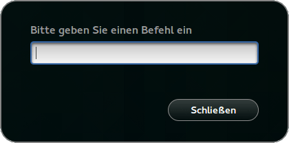
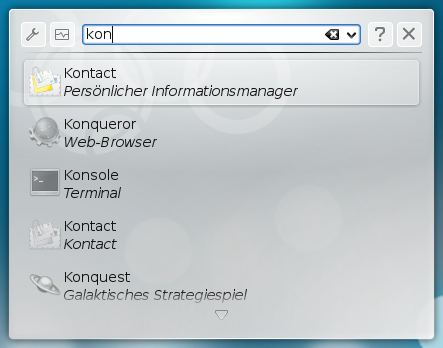
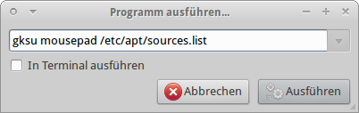
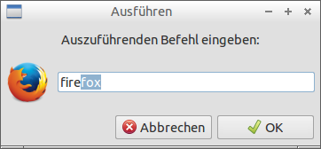

Programme starten
Installierte Programme können je nach genutzter grafischer Benutzeroberfläche auf unterschiedliche Weise gestartet werden. Weit verbreitet ist die Nutzung eines Menüs bzw. Menü-Eintrags (Programmstarter). Bei der Desktop-Oberfläche Unity und der GNOME Shell wurde dieses Konzept durchbrochen, da die Seitenleiste nur noch eine begrenzte Anzahl von Programmstartern enthält. Bei Unity sind weitere Programme nur noch über das Unity/Unity Startmenü - auch "Dash" genannt- verfügbar. Dabei handelt es sich praktisch um eine Mini-Kommandozeile, in der man den Namen eines Programms eingibt.
Alternativ können Programme auch über einen Dateimanager oder die Kommandozeile gestartet werden.
Menüeintrag¶
Installierte Programme sind bei GNOME, KDE, LXDE, MATE und Xfce im Menü zu finden und werden in aller Regel dort automatisch eingetragen, sobald man ein Programm nachinstalliert. Falls nicht, kann man sich einen Eintrag mit einem Menüeditor erstellen. Auch eine individuelle Gestaltung des Menüs ist möglich.
Suchfunktion der Dash¶
Wie über die Dash mit der Suchfunktion ein Programm gestartet werden kann, ist für Unity ausführlicher im Artikel Unity/Unity Startmenü und für die GNOME Shell im Artikel GNOME Shell erklärt.
Anwendungsstarter¶
Der Anwendungsstarter wird unabhängig von der Desktop-Umgebung durch die Tastenkombination Alt + F2 aufgerufen.
GNOME 3¶
Der Anwendungsstarter der GNOME Shell ist sehr einfach gehalten und bietet nur die Möglichkeit, den Namen eines Programms oder einen Befehl einzugeben. Bestätigt man diesen mittels ⏎ wird das Programm ohne Terminal gestartet. Nutzt man hingegen die Tastenkombination Strg + ⏎ , wird das Programm in einem neuen Terminal gestartet. 
KDE (Kubuntu)¶
Unter KDE gibt es zusätzlich im Kontextmenü der Arbeitsfläche den Menüpunkt "Befehl ausführen...". 
Über den Knopf "Einstellungen" (links oben) kann man sich die erweiterten Einstellungen anzeigen lassen. Eine ausführliche Beschreibung findet man im Artikel KRunner.
Xfce (Xubuntu)¶
Der Anwendungsstarter war bis Xfce 4.8 recht spartanisch geraten. Zur Auswahl stand lediglich die Option "Im Terminal ausführen", mit der man ein Programm, z.B. ein Shellskript, im Terminal ausgeführt werden konnte, und ein Auswahl-Feld der zuletzt gestarteten Befehle. Allerdings beherrscht die Eingabezeile Autovervollständigen, wenn ein Programmname erkannt wird.

Mit Xfce 4.10 bzw. ab Ubuntu 12.10 wurde das Programm überarbeitet und mit dem Anwendungsfinder zusammengelegt. Die frühere Option zum Starten im Terminal entfällt und bei Programmen wird das Symbol vor dem Namen eingeblendet. Optisch präsentiert sich der neue Anwendungsstarter nun wie bei LXDE (siehe nächster Abschnitt). Eine weitere, recht komfortable Möglichkeit zum Starten von Programm ist das Verve Plugin für das Xfce Panel.
LXDE (Lubuntu)¶
Auch LXDE beherrscht eine Autovervollständigung, wie man der nachfolgenden Abbildung entnehmen kann.

Lubuntu 14.04¶
In Lubuntu 14.04 funktioniert die Tastenkombination Alt + F2 erst wieder, wenn man eine Änderung in der versteckten Datei ~/.config/openbox/lubuntu-rc.xml im Homeverzeichnis vorgenommen hat. Andere Lubuntu-Versionen sind nicht betroffen.
Andere Fenstermanager¶
Will man mit einem anderen Fenstermanager wie z.B. IceWM ein Programm starten, das im Terminal läuft, reicht es nicht aus, den Startbefehl ins Menü zu schreiben. Es wird eigentlich nie die Option der großen Desktop-Umgebungen ("Im Terminal ausführen") geboten. Deswegen muss man das selbst übernehmen. Dazu startet man ein Terminal, das dann wiederum den gewünschten Befehl ausführt. Anbei das Beispiel für xterm:
xterm -e Programmname
Terminal¶
Ein Aufruf direkt aus dem Terminal bzw. der Konsole ist bei jeder Ubuntu-Version unabhängig von der installierten Benutzeroberfläche möglich. Ein Vorteil dieser Vorgehensweise liegt darin, dass man bei Problemen Fehlermeldungen angezeigt bekommt.
Hinweis:
In manchen Fällen benötigt man zum Ausführen eines Programms oder zum Bearbeiten einer Datei Root-Rechte. Wie man diese unter den verschiedenen Systemen erlangt, ist im Artikel sudo erklärt.
Zum Starten von Programmen gibt es mehrere Möglichkeiten, je nachdem, wo sich ein Programm befindet. So startet man Programme im aktuellen Verzeichnis anders als systemweit installierte Programme, was als Hintergrund Sicherheitsaspekte hat. Programme, die man aus den Quellen installiert hat, befinden sich automatisch in der Umgebungsvariable PATH und können von überall durch die Eingabe des Programmnamens gestartet werden:
programmname
Möchte man das Program vom Terminal trennen ergeben sich zwei Möglichkeiten:
programmname &
Damit wird das Programmfenster in einem Unterprozess gestartet und läuft weiter wenn der eigentliche Shell-Prozess mit Strg + D beendet wird.
programmname & disown
Hier wird das Programm aus der Jobliste entfernt und läuft beim schließen des Terminals weiter.
Sonstige Programme startet man durch Eingabe des vollständigen Pfad- und Dateinamens, z.B.
/home/benutzername/skripte/programmname
Ein Programm, das im aktuellen Verzeichnis innerhalb des Homeverzeichnisses liegt, muss mit einem ./ am Anfang gestartet werden:
./programmname
Mehr zu dem Thema findet man in der Einführung zur Shell.
Es gibt noch weitere nicht Binär-Programme, wie z.B. Shell- oder Python-Skripte, die man auf die gleiche Art ausführen oder ggf. an das jeweilige Programm, also z.B. sh oder python, übergeben kann.
Java¶
Immer wieder nachgefragt: der Start von Java-Programmen, die nicht aus den offiziellen Paketquellen stammen. Die einfachste Möglichkeit ist ein Befehl auf der Kommandozeile:
java -jar programmname.jar
Eine andere Möglichkeit ist der Start über einen Dateimanager. Dazu muss die .jar-Datei je nach Desktop-Umgebung zuerst ausführbar gemacht werden. Nun kann man via "Rechte Maustaste  -> Öffnen mit..." ein vorhandenes Java (in der Regel /usr/bin/java) auswählen. Welche Java-Version - es können mehrere gleichzeitig installiert sein - wird über das Alternativen-System festgelegt (siehe auch Java/Tipps).
-> Öffnen mit..." ein vorhandenes Java (in der Regel /usr/bin/java) auswählen. Welche Java-Version - es können mehrere gleichzeitig installiert sein - wird über das Alternativen-System festgelegt (siehe auch Java/Tipps).
Die dritte Variante ist das Erstellen eines Programmstarters. Die konkrete Vorgehensweise ist im Artikel .desktop-Dateien beschrieben.
Speicherorte für Programme¶
Obwohl sich Programme fast an beliebigen Stellen befinden dürfen, gibt es doch bevorzugte Ordner (siehe auch Verzeichnisstruktur):
| Speicherorte von Programmen | |
| Verzeichnispfad | Beschreibung |
| /bin/ | während des Bootvorgangs benötigte Programme |
| /sbin/ | während des Bootvorgangs benötigte Programme (Root-Rechte erforderlich) |
| /usr/bin/ | der Standard-Ordner für die meisten Programme |
| /usr/local/bin/ | unabhängig von der Paketverwaltung installierte (= selbst kompilierte) Programme |
| /opt/ | Programme, die ihre eigenen Bibliotheken mitbringen (siehe auch opt) |
| ~/bin/ | Programme, die keine Root-Rechte benötigen und im Homeverzeichnis gespeichert werden sollen. Das Verzeichnis muss von Hand angelegt werden. |
Normalerweise befinden sich fast alle diese Ordner bereits im Pfad (Ausnahme: /opt/), so dass man sich im Regelfall keine Gedanken machen muss, wo ein Programm gespeichert ist.
Experten-Info:
Systemweite Programmstarter für alle Desktop-Umgebungen befinden sich unter /usr/share/applications/.
- Erstellt mit Inyoka
-
 2004 – 2017 ubuntuusers.de • Einige Rechte vorbehalten
2004 – 2017 ubuntuusers.de • Einige Rechte vorbehalten
Lizenz • Kontakt • Datenschutz • Impressum • Serverstatus -
Serverhousing gespendet von